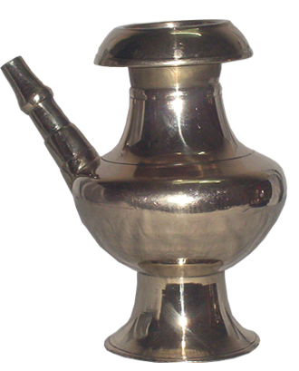
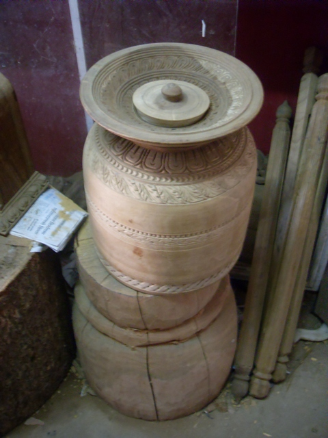
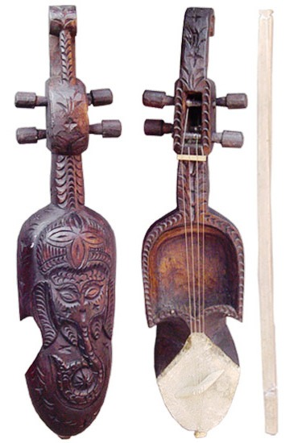
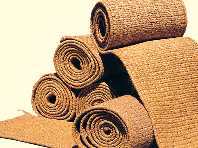

Karuwa
All these vessels are used almost daily in the Nepalese community to drink, store and serve either water, wine or alcohol. These are the traditional water bottles of our community and serves a great purpose to our heritage and culture. "Amkhora" is generally used by all the Nepalese community whereas "Karuwa" and "Anti" is specially used in the Newar community. All three vessels can be made either with just plain metal or may have moderate to exquisit carvings on them.
theki
Theki is locally made by people from wood and is usually used to store milk fat (Taar), make butter (i.e NAUNE GHYU)out of it; which can later be cooked to make the clarified butter also known as ghee and also make buttered milk (i.e MOHI). The "Theki" is only a vessel, where as the "Madani" is like a thick stick with turbines at one end.
Sarangi
"Sarangi" is a Nepalese musical instrument and the people who sing and play such music is known as "Gaine" and the whole community or their group is known as "Gandharba". It is usually sung remembering the sad moments and the pain related to anyones life, but not only limited to the sadness and is also used in different other songs and occasions. It is made out of wood and has four strings attached and works similar to a violin. The songs are very heart touching and brings goosebumps and sometimes also tears to my eyes!!!!
Sukul
Sukul is another type of mat which is popular among the Newar culture in Nepal. It is made up of hay (PARAL) and is long rectangular shape (long enough to seat almost 15 people in a single line). It is usually used in "Bhoj" or "Na-kha-tya" where there is assemble of huge number of people and food is distributed by cooks to all the people. It is generally rolled and stored for reusing next time. Since it is made by hay locally, it is cheap, effective and biodegradable as well!!!!!!!!! It is also said that walking in "SUKUL" also increases blood circulation to your legs and feet... hence reducing oedema to lower extremities!!!.